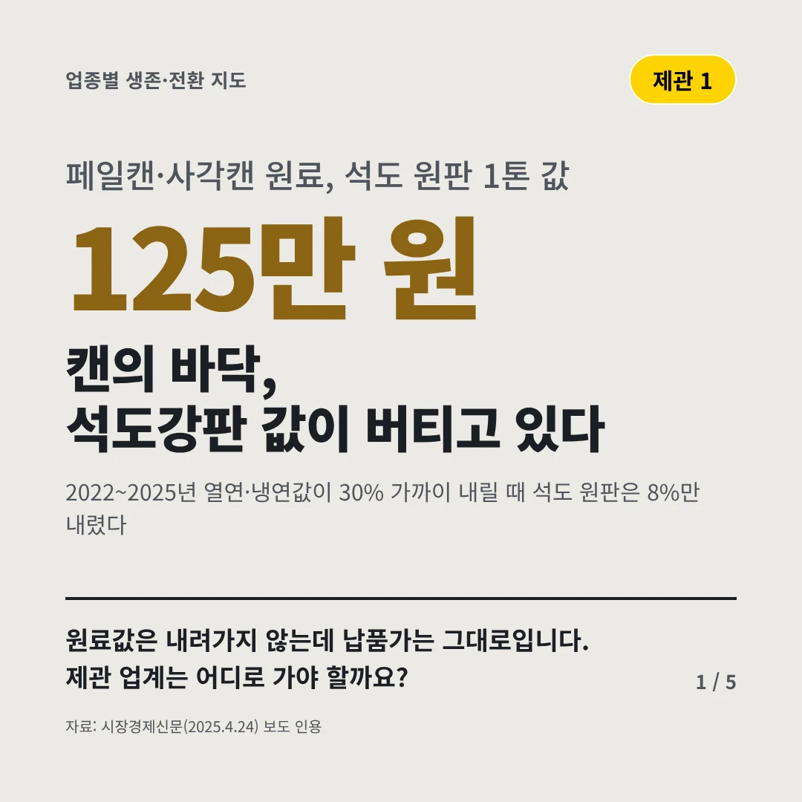
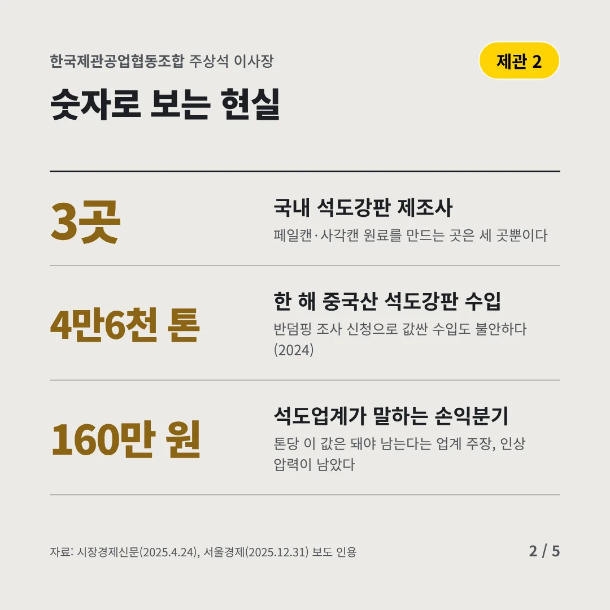
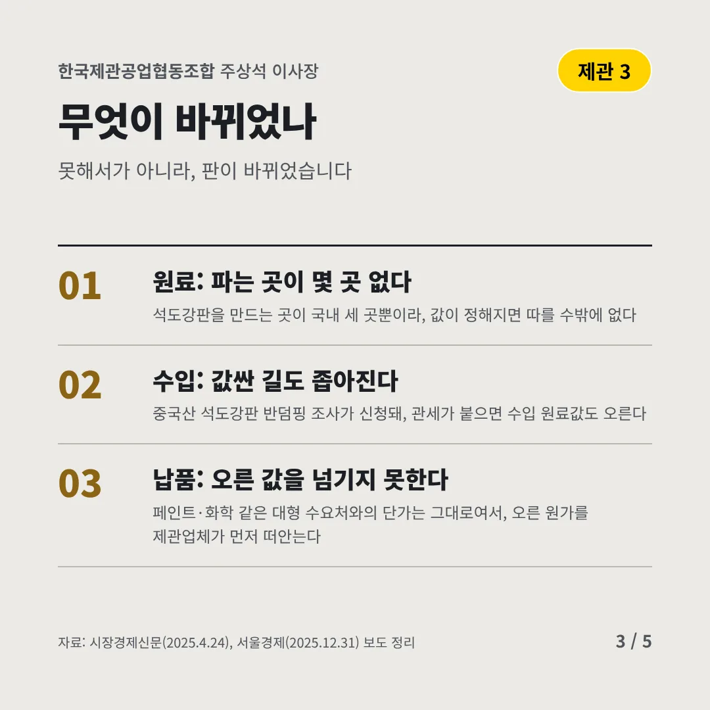
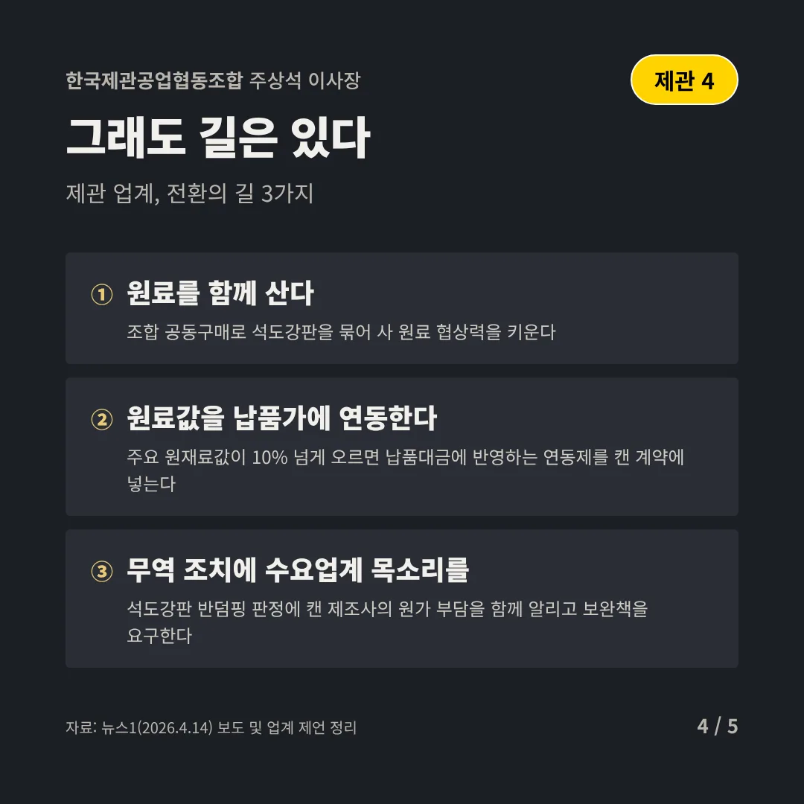
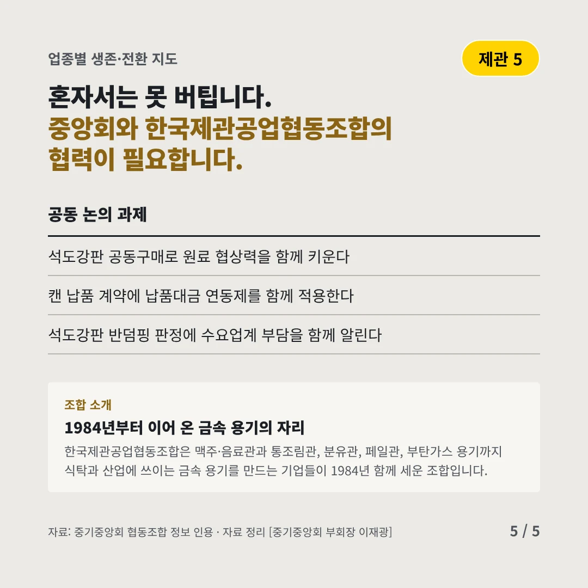
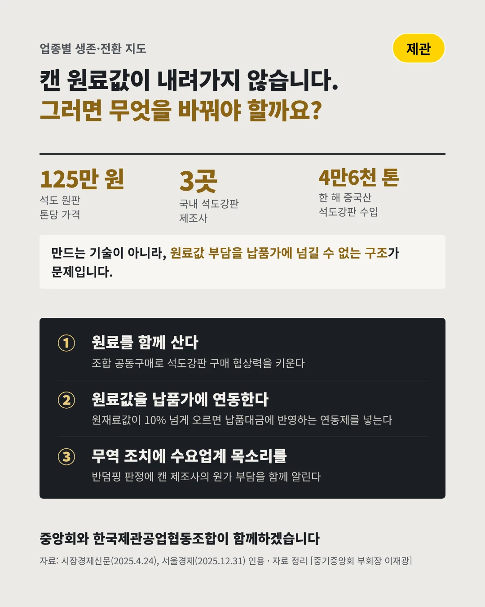

한국제관공업협동조합
캔의 바닥, 석도강판 값이 버티고 있다
125만 원 페일캔·사각캔 원료, 석도 원판 1톤 값






원료값은 내려가지 않는데 납품가는 그대로입니다. 제관 업계는 어디로 가야 할까요?
숫자로 보는 현실
- 3곳국내 석도강판 제조사페일캔·사각캔 원료를 만드는 곳은 세 곳뿐이다
- 4만6천 톤한 해 중국산 석도강판 수입반덤핑 조사 신청으로 값싼 수입도 불안하다(2024)
- 160만 원석도업계가 말하는 손익분기톤당 이 값은 돼야 남는다는 업계 주장, 인상 압력이 남았다
무엇이 바뀌었나
- 원료: 파는 곳이 몇 곳 없다석도강판을 만드는 곳이 국내 세 곳뿐이라, 값이 정해지면 따를 수밖에 없다
- 수입: 값싼 길도 좁아진다중국산 석도강판 반덤핑 조사가 신청돼, 관세가 붙으면 수입 원료값도 오른다
- 납품: 오른 값을 넘기지 못한다페인트·화학 같은 대형 수요처와의 단가는 그대로여서, 오른 원가를 제관업체가 먼저 떠안는다
그래도 길은 있다
- 원료를 함께 산다조합 공동구매로 석도강판을 묶어 사 원료 협상력을 키운다
- 원료값을 납품가에 연동한다주요 원재료값이 10% 넘게 오르면 납품대금에 반영하는 연동제를 캔 계약에 넣는다
- 무역 조치에 수요업계 목소리를석도강판 반덤핑 판정에 캔 제조사의 원가 부담을 함께 알리고 보완책을 요구한다
한 장 요약

조합 소개
한국제관공업협동조합은 맥주·음료관과 통조림관, 분유관, 페일관, 부탄가스 용기까지 식탁과 산업에 쓰이는 금속 용기를 만드는 기업들이 1984년 함께 세운 조합입니다.
자료: 시장경제신문(2025.4.24), 서울경제(2025.12.31), 뉴스1(2026.4.14)